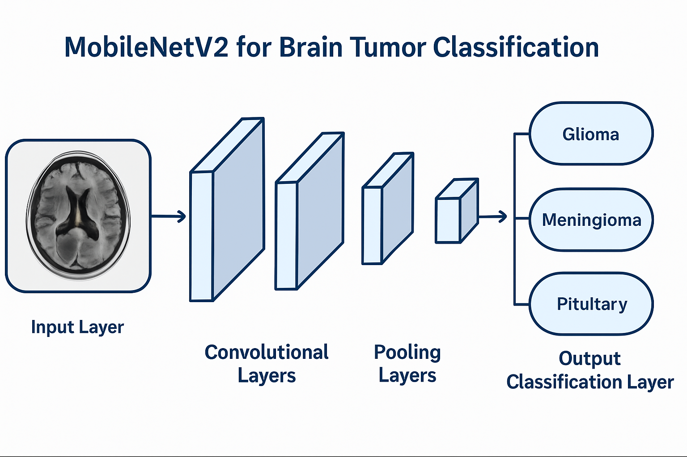

نظرة عامة على النموذج المستخدم
بنية النموذج (MobileNetV2)
النموذج يعتمد على بنية MobileNetV2 كنموذج أساسي مع تعديلات خاصة لتشخيص أورام الدماغ. تم اختيار هذه البنية لكفاءتها العالية وحجمها المناسب للتطبيقات الطبية.
مميزات النموذج المختار
كفاءة حسابية عالية
عدد معلمات أقل مع الحفاظ على الدقة العالية.
خفيف الوزن
مناسب للتشغيل على الأجهزة الطبية المحمولة والأنظمة ذات الموارد المحدودة.
تخصيص للصور الطبية
تم تعديل الطبقات النهائية لتناسب خصائص صور الرنين المغناطيسي للدماغ.

المواصفات التقنية
- مدخلات الصور: 224×224×3 بكسل
- عدد الطبقات: 53 طبقة
- إجمالي المعلمات: 2.4 مليون
- المعلمات القابلة للتدريب: 1.4 مليون
- عدد فئات التصنيف: 3 (الورم الدبقي، الورم السحائي، الورم النخامي)